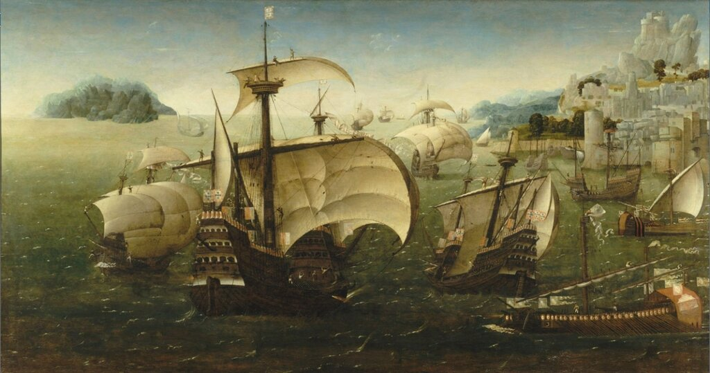
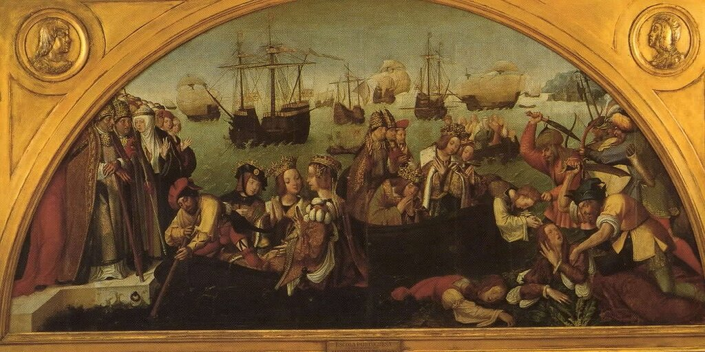
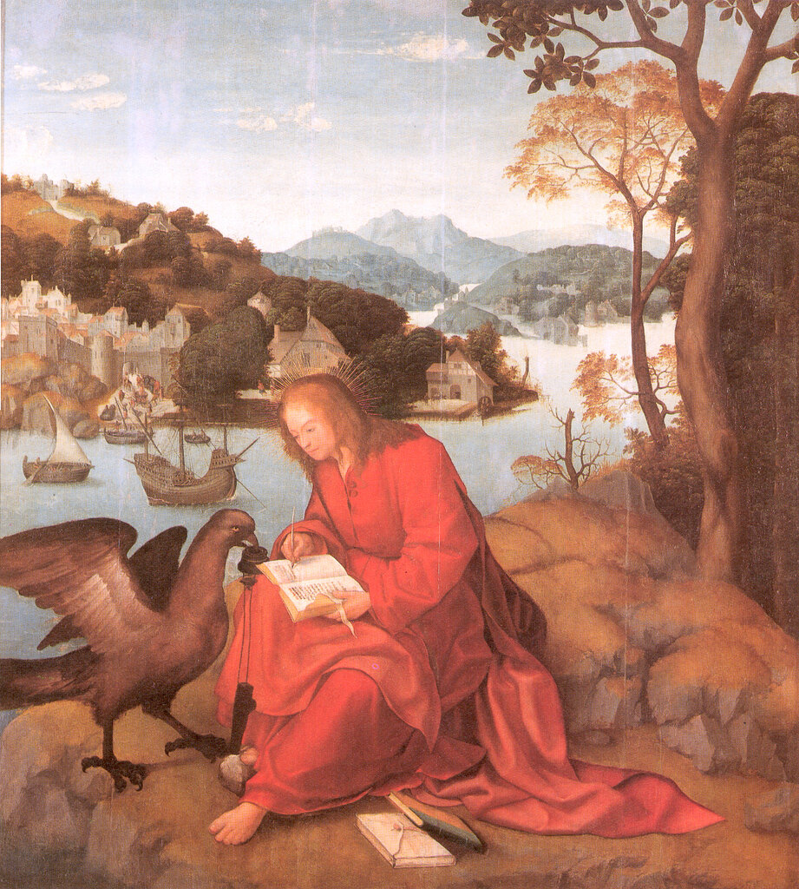

Португальская каракка
Все романы обычно
на свадьбах кончают недаром,
Потому что не знают,
что делать с героем потом.
К. М. Симонов. Пять страниц
Так уж получается, но тема каракки у нас тесно увязана с темой бракосочтания венценосных особ. Мы уже писали (помните, мы тогда еще пообещали начать ходить по свадьбам), что в 1468 году, когда праздновали свадьбу герцога Бургундии Карла Смелого и сестры короля Англии Эдуарда IV Маргариты Йоркской, появилось первое изображение фламандской каракки. И вот сейчас мы обращаемся к истории другой свадьбы, состоявшейся полвека спустя, в 1521 году. Браком сочетались Карл III, герцог Савойи, и шестнадцатилетняя инфанта Беатриса, дочь короля Португалии Мануэла. Правление Мануэла стало периодом наивысшего морского могущества Португалии, при нем Васко да Гама в 1498 году достиг берегов Индии, а Педру Алвариш Кабрал открыл Бразилию. Поэтому, естественно, доставка невесты в Вильфранш, где ее дожидался Карл Добрый, была поручена португальскому флоту.

Португальская каракка у скалистого берега, (1540). Анонимный художник из окружения фламандского живописца Иоахима Патинира. National Maritime Museum, Greenwich, London.
Кстати, в живописи известно не так уж много изображений португальских каракк начала XVI века. Среди них сцена мученической гибели спутниц св. Урсулы на алтарной росписи в церкви святой Авты. Работа ныне находится в Лиссабонском Музее старинных искусств

Ретабло «Мученичество одиннадцати тысяч девственниц» (1512-1525). Lisbon, Museu Nacional De Arte Antiga
Или вот это произведение Мастера из Лориньяна :

Мастер из Лориньяна. Апостол Иоанн на острове Патмос. Museu da Santa Casa da Misericórdia, Лориньян, Португалия
Однако именно панель из Морского музея в Гринвиче стала первым живописным изображением, не связанным с религиозными мотивами.
Но вернемся к свадьбе. Король Мануэл собрал специальный флот, на флагманском корабле которого находилась его юная дочь, чтобы продемонстрировать всем средиземноморским державам свое могущество на море и богатство своей державы, добытое в дальних странах. Во многих хрониках того времени это событие было описано во всех подробностях и красках. Однако, как полагает исследователь этого события Ричард Баркер (Showing the flag in 1521: wafting Beatriz to Savoy), была и еще одна причина для формирования сильного флота для такого случая: невесту со всеми ее богатствами предстояло провести мимо пиратов Северной Африки, бунтовщиков из Испании и военных кораблей воюющих между собой Испании и Франции. Для всех этих морских разбойников свадебный караван являлся лакомым куском. Поэтому полотно с изображением большого числа кораблей под португальскими и савойярдскими флагами, с которого мы начали свой пост, скорее всего и рисует нам это событие, хотя до сих пор на этот счет существует много сомнений.
Ведь было еще одно событие, в котором принимал участие сильный португальский флот – взятие Туниса в 1535 году. Сомневающиеся ученые как раз и полагают, что на полотне из Гринвича изображен флагманский корабль той экспедиции «Сан-Жуан» (São João). Но поскольку сторонники этой гипотезы пока еще в меньшинстве, мы присоединимся к первоначальному варианту – это свадебный кортеж Беатрисы во главе с флагманской караккой «Santa Catarina de Monte Sinai». Тем более, что итальянские искусствоведы полагают: атрибуция полотна (точнее, дубовой панели, на которую нанесено изображение) могла быть сделана лично самой Беатрисой Савойской.
Источники того времени называют различное число (от восемнадцати до двадцати пяти) кораблей, которые входили в состав флота португальской инфанты. Включают в их состав четыре больших навы (naos), принадлежащих лично королю, корабль посла Савойи в Португалии, еще четыре навы поменьше, два галеона (galeões), три каравеллы (caravelas), четыре галеры, до четырех более мелких гребных судов, суда снабжения и обеспечения.
Да, но где же здесь каракки? Прервем здесь рассказ на мгновение, чтобы напомнить то, что мы уже сказали о каракках:
…в конце XV– начале XVI века один и тот же широко распространненный в Европе тип парусного корабля имел различные названия: в Западной Европе это была каракка, в Венеции – барза, в других странах Средиземноморья – нава (в ее различных формах – неф, нао и т.п.). В развитие конструкции всех этих кораблей появился галеон, объединивший лучшие их качества.
Именно так. В португальских документах этого периода такой корабль называется nau, изредка по-испански nao. И никогда каракка. Название картины из Гринвича – Portuguese Carracks off a Rocky Coast – дано уже англичанами.
Ниже мы со всеми подробностями поговорим о португальской каракке - nau, сейчас же вернемся на свадьбу.
Инфанта, как уже говорилось, находилась на флагманском корабле Santa Catarina de Monte Sinai. Это был корабль грузовместимостью от 700 до 800 тонелей (1 португальский тонель – tonel, мн.ч. toneís – единица грузовместимости судна, соответствует грузовому пространству, в котором может поместиться бочка высотой 6 palmos de goa = 1,54м и диаметром 4 palmos de goa = 1,03 м; tonel переводится на русский, естественно, бочка). Заложен корабль был в 1512 году в Индии, в порту Коччи (ранее Кочин, португ. Cochim) на Аравийском море. Введен в строй в 1521 году. Корпус изготовлен был из тикового дерева.
Интересна дальнейшая судьба этого корабля. В 1523 году Катарина стала флагманским кораблем третьего путешествия Васко да Гамы в Индию, достигла Гоа в сентябре 1524 года. При возвращении в Португалию Santa Catarina исчезла. Существует много вариантов этого происшествия, как в записях хронистов того времени, так и в современных исследованиях. Все они связывают это событие так или иначе с бунтом, который поднял на борту каракки опальный капитан португальского флота Луис ди Менезиш, брат губернатора Португальской Индии Дуарте ди Менезиша, арестованного Васко да Гамой и в кандалах направленного в Лиссабон. Братья в целях безопасности находились на разных кораблях. Луис якобы захватил Катарину и занялся пиратством в водах Индийского океана. По другому варианту Катарина была захвачена французскими корсарами где-то на пути между мысом Доброй Надежды и Португалией. Впрочем, существует и еще один вариант: корабль попросту затонул у берегов Мозамбика, так как в корпусе появились многочисленные течи.
Santa Catarina de Monte Sinai была военным кораблем (140 пушек, правда, большая часть – вертлюжные орудия небольшого калибра), поэтому ее пришлось переделать, чтобы приспособить для пребывания будущей герцогини Савойи и ее окружения. На корме были оборудованы дополнительные каюты со всеми удобствами («удобства» включают и то, что обычно понимается под этим словом в великом и могучем). Убрали главный шпиль, а для доступа моряков к рулю построили внешние галереи. Палубу покрыли парчовыми матами. Адмиральскую каюту превратили в огромный зал (sala) шириной 10 м в самом широком месте и 7 м - в самом узком. Ют корабля покрывал роскошный тент, наподобие тех, которые использовались на галере адмирала, и также как на галерах достигавший воды, как, например, на переднем плане изображения из Гринвича, справа.
О том, какую информацию мы еще можем извлечь из изображения свадебного кортежа Беатрисы, поговорим в следующий раз.